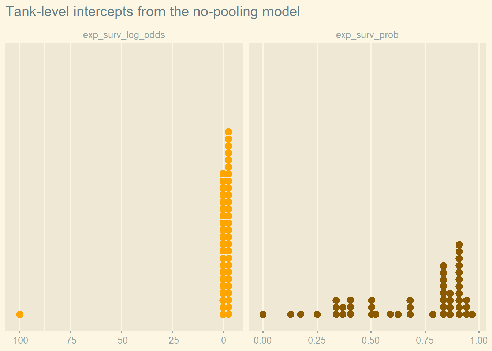
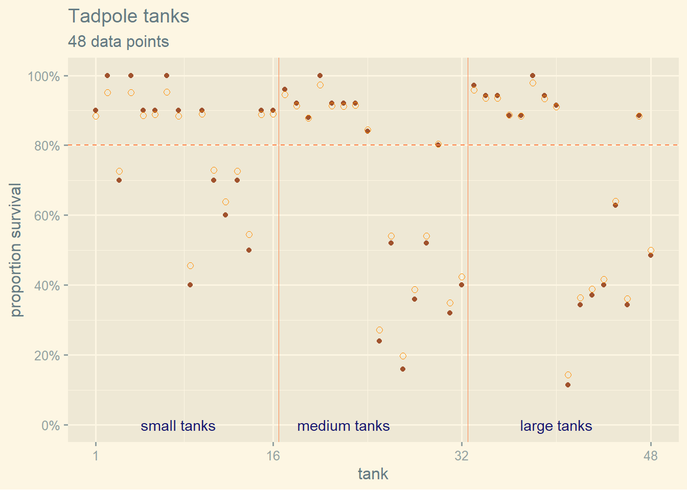
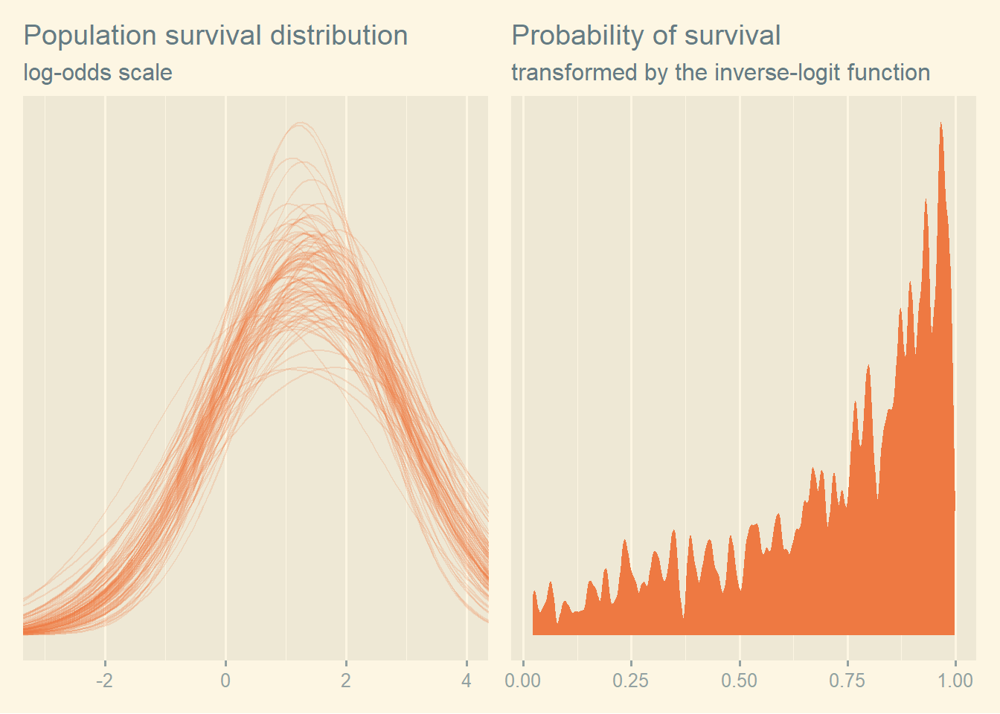
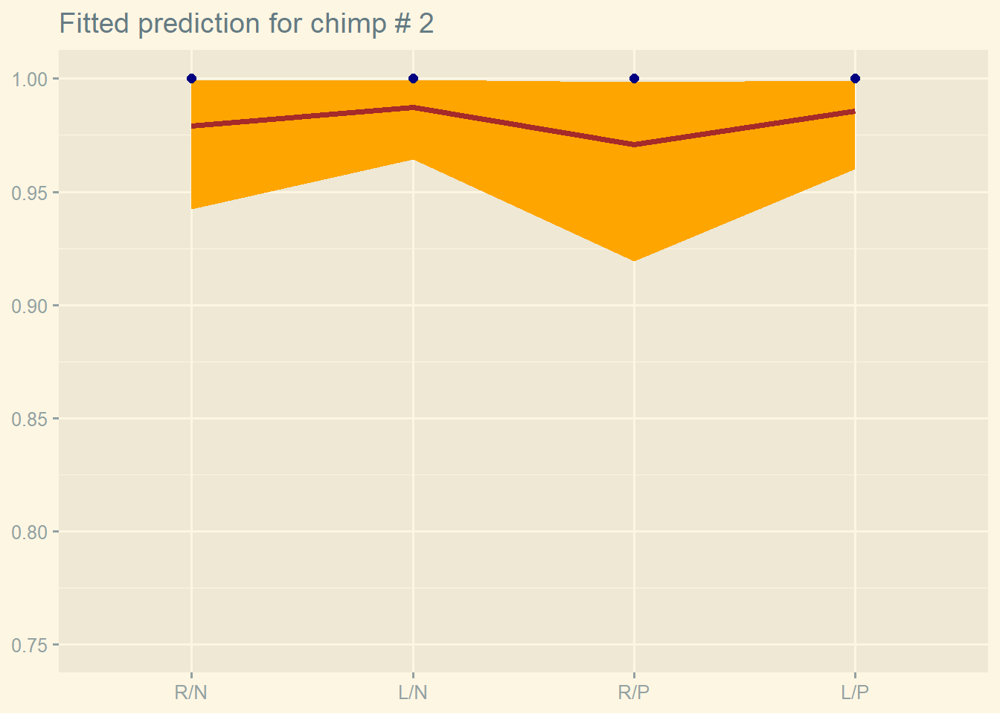
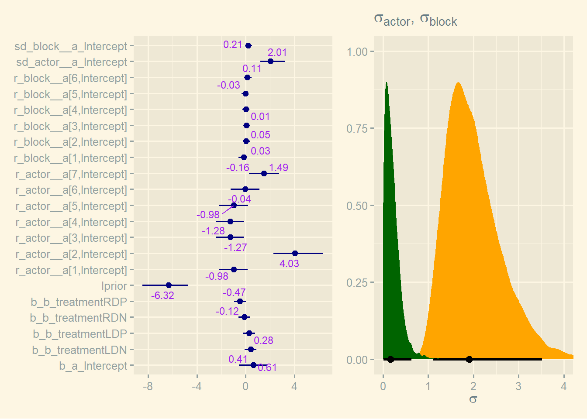
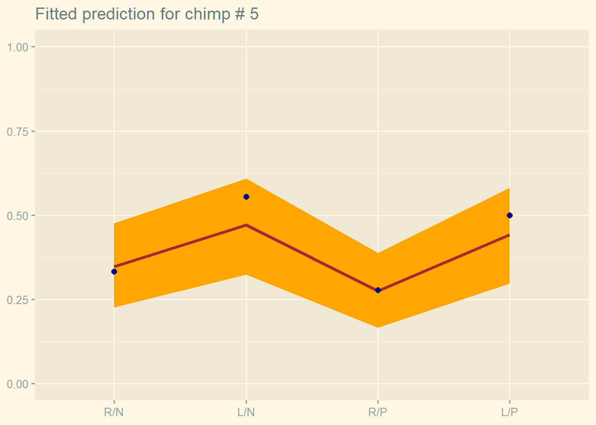

# these options help stan run faster
# source: http://mjskay.github.io/tidybayes/articles/tidy-brms.html
rstan_options(auto_write = TRUE)
options(mc.cores = parallel::detectCores())13 Multilevel Models
We set the current theme used for plotting
theme_set(ggthemes::theme_solarized_2())
# theme_set(
# ggthemes::theme_solarized_2(light = TRUE) +
# theme(strip.background = element_rect(fill = "darkgrey"))
# )# data(iris)
# ggplot(iris, aes(x = Petal.Length, y = Sepal.Length, color = Species)) +
# geom_point() +
# labs(title = "Iris dataset", subtitle = sprintf("%d lines", nrow(iris)))13.1 Example: Multilevel tadpoles
data(reedfrogs)
dataFrogs <- reedfrogs %>%
mutate(tank = seq_len(n()),
tank = factor(tank))
rm(reedfrogs)
skimr::skim(dataFrogs)| Name | dataFrogs |
| Number of rows | 48 |
| Number of columns | 6 |
| _______________________ | |
| Column type frequency: | |
| factor | 3 |
| numeric | 3 |
| ________________________ | |
| Group variables | None |
Variable type: factor
| skim_variable | n_missing | complete_rate | ordered | n_unique | top_counts |
|---|---|---|---|---|---|
| pred | 0 | 1 | FALSE | 2 | no: 24, pre: 24 |
| size | 0 | 1 | FALSE | 2 | big: 24, sma: 24 |
| tank | 0 | 1 | FALSE | 48 | 1: 1, 2: 1, 3: 1, 4: 1 |
Variable type: numeric
| skim_variable | n_missing | complete_rate | mean | sd | p0 | p25 | p50 | p75 | p100 | hist |
|---|---|---|---|---|---|---|---|---|---|---|
| density | 0 | 1 | 23.33 | 10.38 | 10.00 | 10.0 | 25.00 | 35.00 | 35 | ▇▁▇▁▇ |
| surv | 0 | 1 | 16.31 | 9.88 | 4.00 | 9.0 | 12.50 | 23.00 | 35 | ▇▂▂▂▃ |
| propsurv | 0 | 1 | 0.72 | 0.27 | 0.11 | 0.5 | 0.89 | 0.92 | 1 | ▁▂▂▁▇ |
with the plot of data
plotFrogs <- ggplot(dataFrogs, aes(x = as.integer(tank), y = propsurv)) +
geom_point(color = "sienna") +
geom_hline(yintercept = 0.8, color = "sienna1", linetype = "dashed") +
geom_vline(xintercept = c(16.5, 32.5), size = 1/3, color = "sienna1") +
scale_x_continuous(breaks = c(1, 16, 32, 48)) +
scale_y_continuous(breaks = scales::breaks_width(width = 0.2),
labels = scales::label_percent(accuracy = 1)) +
annotate(geom = "text",
x = c(8, 16 + 6, 32 + 8), y = 0,
label = c("small tanks", "medium tanks", "large tanks"),
color = "midnightblue") +
theme(axis.text.x = element_text(size = rel(1))) +
labs(title = "Tadpole tanks",
subtitle = sprintf("%d data points", nrow(dataFrogs)),
x = "tank", y = "proportion survival")Warning: Using `size` aesthetic for lines was deprecated in ggplot2 3.4.0.
ℹ Please use `linewidth` instead.plotFrogs
13.1.1 Simple
and the model, without multilevel effect, is
\[ \begin{align*} surv_i &\sim \mathcal{Binomial}(n_i, p_i) \\ logit(p_i) &= \alpha_{tank[i]} \\ \alpha_{tank} &\sim \mathcal{N}(0, 1.5) \end{align*} \]
and we fit this
tictoc::tic(msg = sprintf("run time of %s, use the cache.", "70 secs."))
b13.1 <- xfun::cache_rds({
out <- brm(
data = dataFrogs,
family = binomial,
surv | trials(density) ~ 0 + tank,
prior = c(prior(normal(0, 1.5), class = b)),
cores = detectCores(), seed = 13)
out <- add_criterion(out, c("loo", "waic"))
out},
file = "ch13_b13_01")
tictoc::toc()run time of 70 secs., use the cache.: 0.21 sec elapsedWe will strive to use tidybayes and posterior whenever possible instead of solutions such as coef[], fixef and ranef. It is the recommended way in documentation from brms and makes the work much easier.
get_variables(b13.1) [1] "b_tank1" "b_tank2" "b_tank3" "b_tank4"
[5] "b_tank5" "b_tank6" "b_tank7" "b_tank8"
[9] "b_tank9" "b_tank10" "b_tank11" "b_tank12"
[13] "b_tank13" "b_tank14" "b_tank15" "b_tank16"
[17] "b_tank17" "b_tank18" "b_tank19" "b_tank20"
[21] "b_tank21" "b_tank22" "b_tank23" "b_tank24"
[25] "b_tank25" "b_tank26" "b_tank27" "b_tank28"
[29] "b_tank29" "b_tank30" "b_tank31" "b_tank32"
[33] "b_tank33" "b_tank34" "b_tank35" "b_tank36"
[37] "b_tank37" "b_tank38" "b_tank39" "b_tank40"
[41] "b_tank41" "b_tank42" "b_tank43" "b_tank44"
[45] "b_tank45" "b_tank46" "b_tank47" "b_tank48"
[49] "lprior" "lp__" "accept_stat__" "stepsize__"
[53] "treedepth__" "n_leapfrog__" "divergent__" "energy__" b13.1 %>%
as_draws() %>%
summarize_draws()# A tibble: 50 × 10
variable mean median sd mad q5 q95 rhat ess_bulk ess_tail
<chr> <dbl> <dbl> <dbl> <dbl> <dbl> <dbl> <dbl> <dbl> <dbl>
1 b_tank1 1.73 1.68 0.746 0.744 0.587 3.01 1.00 5251. 2745.
2 b_tank2 2.41 2.33 0.916 0.890 1.04 4.04 1.00 5240. 2413.
3 b_tank3 0.756 0.731 0.632 0.617 -0.256 1.82 1.00 6149. 2722.
4 b_tank4 2.41 2.36 0.902 0.928 1.04 3.99 1.00 5117. 2478.
5 b_tank5 1.73 1.67 0.782 0.749 0.518 3.12 1.00 5130. 2526.
6 b_tank6 1.72 1.67 0.776 0.750 0.529 3.06 1.00 4772. 2753.
7 b_tank7 2.38 2.33 0.884 0.868 1.04 3.93 1.00 5401. 2569.
8 b_tank8 1.68 1.65 0.736 0.726 0.549 2.96 1.00 5289. 3158.
9 b_tank9 -0.370 -0.359 0.609 0.601 -1.38 0.578 1.00 7166. 2390.
10 b_tank10 1.72 1.66 0.765 0.729 0.541 3.05 1.00 5112. 2815.
# … with 40 more rowsand visualize the intercepts which correspond to the logit of the probabilities.
p <- list()
p <- within(p, {
data <- b13.1 %>%
as_draws() %>%
summarize_draws() %>%
filter(variable != "lp__") %>%
select(variable, a = mean) %>%
mutate(p = gtools::inv.logit(a)) %>%
rename(exp_surv_log_odds = a, exp_surv_prob = p) %>%
pivot_longer(cols = c(exp_surv_log_odds, exp_surv_prob))
plot <- ggplot(data, aes(x = value, fill = name, color = name)) +
geom_dotplot() +
scale_fill_manual(values = c("orange1", "orange4")) +
scale_color_manual(values = c("orange1", "orange4")) +
scale_y_continuous(breaks = NULL) +
theme(legend.position = "none") +
labs(title = "Tank-level intercepts from the no-pooling model",
x = NULL, y = NULL) +
facet_wrap(. ~ name, scales = "free_x")
})
p$plotBin width defaults to 1/30 of the range of the data. Pick better value with
`binwidth`.
13.1.2 Multilevel
and now the multilevel model
\[ \begin{align*} surv_i &\sim \mathcal{Binomial}(n_i, p_i) \\ logit(p_i) &= \alpha_{tank[i]} \\ \alpha_j &\sim \mathcal{N}(\bar{\alpha}, \sigma) \\ \bar{\alpha} &\sim \mathcal{N}(0, 1.5) \\ \sigma &\sim \mathcal{Exponential}(1) \end{align*} \]
and the fit is as follows. Note the prior prior(exponential(0, 1), class = sd) which is parametrized in the standard deviation metric (Kurtz). It is common for multilevel software to model the variance metric. This will be further explained in chapter 14.
tictoc::tic(msg = sprintf("run time of %s, use the cache.", "70 secs."))
b13.2 <- xfun::cache_rds({
out <- brm(
data = dataFrogs,
family = binomial,
surv | trials(density) ~ 1 + (1 | tank),
prior = c(prior(normal(0, 1.5), class = Intercept),
prior(exponential(1), class = sd)),
cores = detectCores(),
sample_prior = TRUE, seed = 13)
out <- add_criterion(out, c("loo", "waic"))
out},
file = "ch13_b13_02")
tictoc::toc()run time of 70 secs., use the cache.: 0.24 sec elapsedsummary(b13.2) Family: binomial
Links: mu = logit
Formula: surv | trials(density) ~ 1 + (1 | tank)
Data: dataFrogs (Number of observations: 48)
Draws: 4 chains, each with iter = 2000; warmup = 1000; thin = 1;
total post-warmup draws = 4000
Group-Level Effects:
~tank (Number of levels: 48)
Estimate Est.Error l-95% CI u-95% CI Rhat Bulk_ESS Tail_ESS
sd(Intercept) 1.62 0.21 1.26 2.06 1.01 1015 1753
Population-Level Effects:
Estimate Est.Error l-95% CI u-95% CI Rhat Bulk_ESS Tail_ESS
Intercept 1.36 0.25 0.89 1.86 1.00 790 1438
Draws were sampled using sampling(NUTS). For each parameter, Bulk_ESS
and Tail_ESS are effective sample size measures, and Rhat is the potential
scale reduction factor on split chains (at convergence, Rhat = 1).get_variables(b13.2) [1] "b_Intercept" "sd_tank__Intercept" "r_tank[1,Intercept]"
[4] "r_tank[2,Intercept]" "r_tank[3,Intercept]" "r_tank[4,Intercept]"
[7] "r_tank[5,Intercept]" "r_tank[6,Intercept]" "r_tank[7,Intercept]"
[10] "r_tank[8,Intercept]" "r_tank[9,Intercept]" "r_tank[10,Intercept]"
[13] "r_tank[11,Intercept]" "r_tank[12,Intercept]" "r_tank[13,Intercept]"
[16] "r_tank[14,Intercept]" "r_tank[15,Intercept]" "r_tank[16,Intercept]"
[19] "r_tank[17,Intercept]" "r_tank[18,Intercept]" "r_tank[19,Intercept]"
[22] "r_tank[20,Intercept]" "r_tank[21,Intercept]" "r_tank[22,Intercept]"
[25] "r_tank[23,Intercept]" "r_tank[24,Intercept]" "r_tank[25,Intercept]"
[28] "r_tank[26,Intercept]" "r_tank[27,Intercept]" "r_tank[28,Intercept]"
[31] "r_tank[29,Intercept]" "r_tank[30,Intercept]" "r_tank[31,Intercept]"
[34] "r_tank[32,Intercept]" "r_tank[33,Intercept]" "r_tank[34,Intercept]"
[37] "r_tank[35,Intercept]" "r_tank[36,Intercept]" "r_tank[37,Intercept]"
[40] "r_tank[38,Intercept]" "r_tank[39,Intercept]" "r_tank[40,Intercept]"
[43] "r_tank[41,Intercept]" "r_tank[42,Intercept]" "r_tank[43,Intercept]"
[46] "r_tank[44,Intercept]" "r_tank[45,Intercept]" "r_tank[46,Intercept]"
[49] "r_tank[47,Intercept]" "r_tank[48,Intercept]" "prior_Intercept"
[52] "prior_sd_tank" "lprior" "lp__"
[55] "accept_stat__" "stepsize__" "treedepth__"
[58] "n_leapfrog__" "divergent__" "energy__" b13.2 %>%
as_draws() %>%
subset_draws(variable = "tank\\[", regex = TRUE) %>%
summarize_draws(mean, median, sd, mad, ~quantile2(., probs = c(0.055, 0.945))) %>%
mutate(tank = as.integer(regmatches(variable, regexpr(pattern = "[[:digit:]]+", variable)))) %>%
relocate(tank)# A tibble: 48 × 8
tank variable mean median sd mad q5.5 q94.5
<int> <chr> <dbl> <dbl> <dbl> <dbl> <dbl> <dbl>
1 1 r_tank[1,Intercept] 0.762 0.694 0.868 0.840 -0.489 2.25
2 2 r_tank[2,Intercept] 1.70 1.61 1.08 1.07 0.115 3.52
3 3 r_tank[3,Intercept] -0.358 -0.398 0.680 0.667 -1.41 0.734
4 4 r_tank[4,Intercept] 1.69 1.60 1.11 1.06 0.108 3.58
5 5 r_tank[5,Intercept] 0.756 0.699 0.879 0.849 -0.545 2.24
6 6 r_tank[6,Intercept] 0.766 0.727 0.878 0.845 -0.542 2.22
7 7 r_tank[7,Intercept] 1.75 1.65 1.12 1.11 0.150 3.67
8 8 r_tank[8,Intercept] 0.759 0.689 0.873 0.848 -0.545 2.25
9 9 r_tank[9,Intercept] -1.54 -1.52 0.657 0.643 -2.59 -0.493
10 10 r_tank[10,Intercept] 0.782 0.747 0.894 0.901 -0.578 2.27
# … with 38 more rows13.1.3 Comparison
and compare the models
loo_compare(b13.1, b13.2, criterion = "waic") elpd_diff se_diff
b13.2 0.0 0.0
b13.1 -7.9 1.9 and convert the elpd_diif to the waic metric
loo_compare(b13.1, b13.2, criterion = "waic") %>%
as.data.frame() %>%
mutate(waic_diff = elpd_diff * -2,
waic_diff_se = se_diff * 2) %>%
select(elpd_diff, se_diff, waic_diff, waic_diff_se) elpd_diff se_diff waic_diff waic_diff_se
b13.2 0.000000 0.000000 0.00000 0.000000
b13.1 -7.858033 1.856776 15.71607 3.713553model_weights(b13.1, b13.2, weights = "waic") %>%
round(digits = 2)b13.1 b13.2
0 1 13.1.4 Posterior distribution
summary(b13.2) Family: binomial
Links: mu = logit
Formula: surv | trials(density) ~ 1 + (1 | tank)
Data: dataFrogs (Number of observations: 48)
Draws: 4 chains, each with iter = 2000; warmup = 1000; thin = 1;
total post-warmup draws = 4000
Group-Level Effects:
~tank (Number of levels: 48)
Estimate Est.Error l-95% CI u-95% CI Rhat Bulk_ESS Tail_ESS
sd(Intercept) 1.62 0.21 1.26 2.06 1.01 1015 1753
Population-Level Effects:
Estimate Est.Error l-95% CI u-95% CI Rhat Bulk_ESS Tail_ESS
Intercept 1.36 0.25 0.89 1.86 1.00 790 1438
Draws were sampled using sampling(NUTS). For each parameter, Bulk_ESS
and Tail_ESS are effective sample size measures, and Rhat is the potential
scale reduction factor on split chains (at convergence, Rhat = 1).This time we don’t have a list of intercepts as in b13.2. We have a descripion of their distribution \(\alpha_j \sim \mathcal{N}(\bar{\alpha}, \sigma)\) where \(Intercept = \bar{\alpha}\) and \(sd(Intercept) = \sigma\).
The task of getting the posterior is easier with tidybayes and posterior than the way McElreath and Kurtz do it.
# IMPORTANT: We use the median value, not the mean because of skewed
# binomial dist. You don't always have to use the mean!
fitted <- list()
fitted <- within(fitted, {
newdata <- dataFrogs
data <- epred_draws(b13.2, newdata = newdata) %>%
as.data.frame() %>%
select(tank, density, .epred) %>%
mutate(prop = .epred / density) %>%
group_by(tank) %>%
summarize(surv_prop = median(prop))
})
# fitted$dataplotFrogs +
geom_point(fitted$data, mapping = aes(x = as.integer(tank), y = surv_prop),
inherit.aes = FALSE, shape = 1, size = 2, color = "darkorange")
First, we take a sampling of size 100 of the 4000 draws from the posterior sample with slice_sample(n = 100).
Second, to simulate the distribution of the logodds values described by the b_Intercept and tank_Intercepts of each draw we create a sequence of 100 logodds values between -4 and 5 (based on the acutal range of -2, 3.5 shown just above) which is done by expand(nesting(iter, b_Intercept, sd_tank__Intercept), x = seq(from = -4, to = 5, length.out = 100)) and which will result in 10000 lines.
Third, we compute the normal density for each of the 10000 lines using the b_Intercept and tank_Intercepts of each line. The normal density is used because the model is \(\alpha_{tank} \sim \mathcal{N}(0, 5)\) and \(\alpha \sim \mathcal{N}(0, 1)\). This is done with
samples <- list()
samples <- within(samples, {
data1 <- as_draws_df(b13.2) %>%
slice_sample(n = 100) %>%
expand(nesting(.draw, b_Intercept, sd_tank__Intercept),
x = seq(from = -4, to = 5, length.out = 100)) %>%
mutate(density = dnorm(x, mean = b_Intercept, sd = sd_tank__Intercept))
data2 <- as_draws_df(b13.2) %>%
slice_sample(n = 1000, replace = TRUE) %>%
mutate(p_logit = rnorm(n(), mean = b_Intercept, sd = sd_tank__Intercept),
p = gtools::inv.logit(p_logit))
p1 <- ggplot(data1, aes(x = x, y = density, group = .draw)) +
geom_line(alpha = .2, color = "sienna2") +
scale_y_continuous(NULL, breaks = NULL) +
coord_cartesian(xlim = c(-3, 4)) +
labs(title = "Population survival distribution",
subtitle = "log-odds scale", x = NULL, y = NULL)
p2 <- ggplot(data2, aes(x = p)) +
geom_density(size = 0, fill = "sienna2", color = "sienna2", adjust = 0.1) +
scale_y_continuous(NULL, breaks = NULL) +
labs(title = "Probability of survival",
subtitle = "transformed by the inverse-logit function",
x = NULL, y = NULL)
})
wrap_plots(samples$p1, samples$p2)
To improve the model you could use Half-Normal (or Half-Cauchy) instead of exponential, and now the multilevel model
\[ \begin{align*} surv_i &\sim \mathcal{Binomial}(n_i, p_i) \\ logit(p_i) &= \alpha_{tank[i]} \\ \alpha_j &\sim \mathcal{N}(\bar{\alpha}, \sigma) \\ \bar{\alpha} &\sim \mathcal{N}(0, 1.5) \\ \sigma &\sim \mathcal{Half-Normal}(0, 1) \end{align*} \]
13.2 Varying effects
13.2.1 The model
\[ \begin{align*} surv_i &\sim \mathcal{Binomial}(n_i, p_i) \\ logit(p_i) &= \alpha_{pond[i]} \\ \alpha_{pond[i]} &\sim \mathcal{N}(\bar{\alpha}, \sigma) \\ \bar{\alpha} &\sim \mathcal{N}(0, 1.5) \\ \sigma &\sim \mathcal{Exponential}(1) \end{align*} \]
where we have
- \(\bar{\alpha}\): Average log-odd of the survival rate for entire population of ponds
- \(\sigma\): Standard deviation of log-odds of survival among ponds
- \(\alpha_{pond}\): vector of individual pond intercept (mean)
13.2.2 Assign value to the parameters
sim <- list()
sim <- within(sim, {
a_bar <- 1.5
sigma <- 1.5
nponds <- 60
set.seed(5005) # same seed as McElreath
data <- data.frame(
pond = seq_len(nponds),
Ni = rep(as.integer(c(5, 10, 25, 35)), each = 15),
true_a = rnorm(nponds, mean = a_bar, sd = sigma)) %>%
mutate(true_p = gtools::inv.logit(true_a))
})
# because of stan, Ni must be an integer
stopifnot(is.integer(sim$data$Ni))
# glimpse(sim$data)and we plot the data to see the real distributions
ggplot(sim$data, aes(x = true_a, y = as.factor(Ni))) +
stat_dotsinterval(.width = 0.5, fill = "orange", fatten_point = 3) +
labs(title = "Distribution of log odd of survival by pond",
y = NULL)Warning: Using the `size` aesthietic with geom_segment was deprecated in ggplot2 3.4.0.
ℹ Please use the `linewidth` aesthetic instead.
13.2.3 Simulate survivors
The model uses
\[ \begin{align*} surv_i &\sim \mathcal{Binomial}(n_i, p_i) \\ logit(p_i) &= \alpha_{pond[i]} \\ \alpha_{pond[i]} &\sim \mathcal{N}(\bar{\alpha}, \sigma) \\ \bar{\alpha} &\sim \mathcal{N}(0, 1.5) \\ \sigma &\sim \mathcal{Exponential}(1) \end{align*} \]
therefore the simulation of \(p_i\) must use the logistic function
sim <- within(sim, {
set.seed(5005)
data <- data %>%
mutate(Si = rbinom(n(), prob = true_p, size = Ni))
# data$Si <- rbinom(nponds, prob = data$true_p, size = data$Ni)
})# near(inv_logit_scaled(sim$data$true_a), gtools::inv.logit(sim$data$true_a))13.2.4 Compute the no-pooling estimates
sim$data <- sim$data %>%
mutate(nopool_p = Si / Ni)
# glimpse(sim$data)13.2.5 Compute the partial pooling estimates
tictoc::tic(msg = sprintf("run time of %s, use the cache.", "70 secs."))
b13.3 <- xfun::cache_rds({
out <- brm(
data = sim$data,
family = binomial,
Si | trials(Ni) ~ 1 + (1 | pond),
prior = c(prior(normal(0, 1.5), class = Intercept),
prior(exponential(1), class = sd)),
cores = detectCores(), seed = 13)
out <- add_criterion(out, c("loo", "waic"))
out},
file = "ch13_b13_03")
tictoc::toc()run time of 70 secs., use the cache.: 0.22 sec elapsedsummary(b13.3) Family: binomial
Links: mu = logit
Formula: Si | trials(Ni) ~ 1 + (1 | pond)
Data: sim$data (Number of observations: 60)
Draws: 4 chains, each with iter = 2000; warmup = 1000; thin = 1;
total post-warmup draws = 4000
Group-Level Effects:
~pond (Number of levels: 60)
Estimate Est.Error l-95% CI u-95% CI Rhat Bulk_ESS Tail_ESS
sd(Intercept) 1.49 0.20 1.14 1.94 1.00 1296 1914
Population-Level Effects:
Estimate Est.Error l-95% CI u-95% CI Rhat Bulk_ESS Tail_ESS
Intercept 1.48 0.23 1.04 1.95 1.00 1091 1861
Draws were sampled using sampling(NUTS). For each parameter, Bulk_ESS
and Tail_ESS are effective sample size measures, and Rhat is the potential
scale reduction factor on split chains (at convergence, Rhat = 1).The package tidybayes is handy when dealing with multi-level models. We will favor using it instead of the straight tidyverse approach from Kurz (2020). Using coef[] etc. can create a lot of confusion. The tidybayes offers a unified naming convention that contribute to the learning process. For an expert, maybe not, for a beginnier yes, absolutely.
A useful function to understand the use of tidybayes is get_variables() which gives us the variables’ name structure to use.
# get_variables(b13.3)and we have our point summaries and interval as follows
as_draws(b13.3) %>%
subset_draws(variable = "pond\\[", regex = TRUE) %>%
summarize_draws(mean, median, sd, mad, ~quantile2(., probs = c(0.055, 0.945))) %>%
mutate(pond = as.integer(regmatches(variable, regexpr(pattern = "[[:digit:]]+", variable)))) %>%
relocate(pond)# A tibble: 60 × 8
pond variable mean median sd mad q5.5 q94.5
<int> <chr> <dbl> <dbl> <dbl> <dbl> <dbl> <dbl>
1 1 r_pond[1,Intercept] 0.0896 0.0278 0.943 0.899 -1.33 1.69
2 2 r_pond[2,Intercept] 0.0822 0.0427 0.934 0.910 -1.37 1.64
3 3 r_pond[3,Intercept] -0.694 -0.725 0.845 0.830 -2.01 0.667
4 4 r_pond[4,Intercept] 1.14 1.04 1.14 1.09 -0.529 3.10
5 5 r_pond[5,Intercept] 1.14 1.05 1.14 1.12 -0.543 3.12
6 6 r_pond[6,Intercept] 0.0860 0.0361 0.933 0.900 -1.34 1.64
7 7 r_pond[7,Intercept] 0.0873 0.0384 0.937 0.896 -1.33 1.66
8 8 r_pond[8,Intercept] 0.0829 0.0520 0.930 0.906 -1.33 1.62
9 9 r_pond[9,Intercept] -0.704 -0.742 0.850 0.817 -2.01 0.708
10 10 r_pond[10,Intercept] 0.0725 0.0368 0.926 0.898 -1.35 1.58
# … with 50 more rowsIt is important to understand that epred_draws is not simply the result of linpred-draws converted with the inverse link function. It can be illustrated in this case as follows
# the linear/link-level predictor
lp <- linpred_draws(b13.3, newdata = sim$data[, c("Ni", "pond")]) %>%
select(-.chain, -.iteration) %>%
summarize_draws()
# the
ep <- epred_draws(b13.3, newdata = sim$data[, c("Ni", "pond")]) %>%
select(-.chain, -.iteration) %>%
summarize_draws()
# the link-level precitor
head(lp[, c("pond", "Ni", "mean")])# A tibble: 6 × 3
# Groups: Ni, pond [6]
pond Ni mean
<int> <int> <dbl>
1 1 5 1.56
2 2 5 1.56
3 3 5 0.781
4 4 5 2.62
5 5 5 2.62
6 6 5 1.56 # the expected posterior predictive
head(ep[, c("pond", "Ni", "mean")])# A tibble: 6 × 3
# Groups: Ni, pond [6]
pond Ni mean
<int> <int> <dbl>
1 1 5 3.96
2 2 5 3.96
3 3 5 3.32
4 4 5 4.49
5 5 5 4.49
6 6 5 3.96# now the inverse of the link-level predictor
# is not the same as the expected posterior predictive
head(data.frame(
linpred = lp$mean,
linpred_inv = gtools::inv.logit(lp$mean),
epred = ep$mean / ep$Ni
)) linpred linpred_inv epred
1 1.564818 0.8270436 0.7922566
2 1.557419 0.8259827 0.7912494
3 0.780770 0.6858460 0.6634395
4 2.618391 0.9320359 0.8977941
5 2.620086 0.9321431 0.8984050
6 1.561183 0.8265230 0.7917833and we get the information on the level 1, the fixed effect, with fixef(b13.3) and the level 2, random effects, with ranef(b13.3)`
# fixef(b13.3)
# ranef(b13.3)and the whole thing is obtained with the fit which calls the stan data
# b13.3$fitIn this work we favor using
tidybayesandposterior. fixef(b13.3), ranef(b13.3), b13.3$fit and coef()[, ,] are avoided.
coef(b13.3)$pond[, , ] %>%
as.data.frame() Estimate Est.Error Q2.5 Q97.5
1 1.56481767 0.9378836 -0.09676910 3.5578887
2 1.55741928 0.9338372 -0.14728288 3.5476243
3 0.78076998 0.8302713 -0.77832160 2.4580611
4 2.61839132 1.1593437 0.56980354 5.1846941
5 2.62008590 1.1450393 0.62071019 5.0541465
6 1.56118302 0.9329398 -0.14240786 3.5300618
7 1.56243085 0.9311861 -0.12181444 3.5397686
8 1.55806114 0.9257630 -0.14659249 3.5363209
9 0.77105538 0.8377518 -0.79744682 2.5204506
10 1.54765887 0.9203561 -0.11399497 3.4744222
11 2.61571150 1.1688374 0.58732042 5.1676297
12 0.12230477 0.8100913 -1.48248404 1.7073845
13 2.59904509 1.1386899 0.59021122 5.0485760
14 1.54862699 0.9470567 -0.16788955 3.5794189
15 2.60421724 1.1170121 0.62899417 4.9129824
16 0.62636152 0.6191273 -0.57835805 1.8633119
17 -0.47180659 0.6055999 -1.70956947 0.6978421
18 0.24080948 0.6163069 -0.93695260 1.4484023
19 0.24454921 0.6115264 -0.92953909 1.4544669
20 1.02999787 0.6712632 -0.24755870 2.4275508
21 -0.11982247 0.5998472 -1.32098445 1.0352781
22 2.12976455 0.8801817 0.59422073 4.0207369
23 2.98745272 1.1106039 1.09525819 5.3797646
24 0.63064237 0.6421463 -0.59339803 1.9352213
25 1.52535470 0.7308768 0.23271665 3.0321527
26 2.14285522 0.8516299 0.64415237 3.9636378
27 1.51126274 0.7307736 0.17996415 3.0648288
28 1.03910235 0.6722734 -0.22042954 2.4226865
29 0.63494078 0.6155302 -0.52358162 1.9026620
30 1.03454169 0.6773124 -0.20910863 2.4495957
31 2.89184044 0.7722165 1.56535747 4.6049951
32 2.02200321 0.5904217 0.94147110 3.2755790
33 2.87540929 0.7625072 1.56662211 4.6393861
34 1.02775905 0.4385294 0.20567218 1.9487128
35 0.49651195 0.3923426 -0.24942928 1.2915432
36 3.57036909 0.9454250 2.00750866 5.7798879
37 -1.89957219 0.5788847 -3.10945321 -0.8605633
38 -0.59968969 0.4157328 -1.42642468 0.1988676
39 0.50454640 0.4096374 -0.31218818 1.3481675
40 3.57043839 0.9475185 1.98001271 5.6390474
41 3.57424552 0.9801798 1.92470705 5.8031656
42 2.02432250 0.5857694 0.98838962 3.2778847
43 -0.27925696 0.3895425 -1.07684769 0.4641712
44 0.84123289 0.4342111 0.02877391 1.7623581
45 -1.15291596 0.4652393 -2.10427121 -0.2802917
46 0.01997509 0.3345544 -0.62238549 0.6626060
47 3.79804954 0.9257440 2.25992524 5.8887531
48 3.79570328 0.9276365 2.24666025 5.8739464
49 1.61444801 0.4312908 0.83814873 2.5195683
50 1.62343407 0.4392828 0.80792581 2.5659542
51 1.62692918 0.4345140 0.83990776 2.5402863
52 0.02283551 0.3393788 -0.66277826 0.6746010
53 1.62652558 0.4497641 0.80180052 2.5627908
54 3.80714561 0.9405046 2.23550835 5.8872887
55 0.59746740 0.3524679 -0.08740606 1.3011748
56 3.14493254 0.7374162 1.87464134 4.8008093
57 0.71645181 0.3362791 0.06850998 1.3854194
58 2.69102302 0.6394848 1.57266533 4.0555487
59 1.81632030 0.4648594 0.96757544 2.8096880
60 2.68398445 0.6090353 1.61121180 3.9774177sim <- within(sim, {
linpred <- linpred_draws(b13.3, newdata = sim$data[, c("Ni", "pond")]) %>%
select(-.chain, -.iteration) %>%
summarize_draws()
data <- data %>%
# bind_cols(partpool_p) %>%
mutate(partpool_p = gtools::inv.logit(linpred$mean)) %>%
mutate(nopool_error = abs(nopool_p - true_p),
partpool_error = abs(partpool_p - true_p))
})
# glimpse(sim$data)ggplot(sim$data, aes(x = pond, y = nopool_error)) +
geom_point(color = "sienna") +
geom_point(mapping = aes(y = partpool_error),
shape = 1, size = 2, color = "darkorange") +
geom_vline(xintercept = c(16.5, 32.5), size = 1/3, color = "sienna1") +
scale_x_continuous(breaks = c(1, 10, 20, 30, 40, 50, 60)) +
scale_y_continuous(breaks = scales::breaks_width(width = 0.10),
labels = scales::label_percent(accuracy = 1)) +
annotate(geom = "text",
x = c(15 - 7.5, 30 - 7.5, 45 - 7.5, 60 - 7.5), y = .45,
label = c("tiny (5)", "small (10)", "medium (25)", "large (35)")) +
theme(axis.text.x = element_text(size = rel(1))) +
labs(title = "Tadpole tanks",
subtitle = "Same results as Kurtz, difference with McElreath caused by the seed",
x = NULL, y = NULL)
Important: The
coefgives the coefficients of the posterior distribution. It is the same aslinpred. It reflects all the levels of the multilevel model, that is both the fixed effects, obtained byfixef(), and the random effects, obtained byranef(), on the posterior ditribution. In our current model which only has an intercept, it is therefore, also, the average by pond.
13.3 More than one type of cluster
13.3.1 Multilevel chimpanzees
13.3.1.1 The model
\[ \begin{align*} pull\_left_i &\sim \mathcal{Binomial}(1, p_i) \\ logit(p_i) &= \alpha + \alpha_{actor[i]} + \gamma_{block[i]} +\beta_{treatment[i]} \\ \beta_j &\sim \mathcal{N}(0, 0.5), \text{for j = 1..4} \\ \alpha_j &\sim \mathcal{N}(\bar{\alpha}, \sigma_{\alpha}), \text{for j = 1..7} \\ \gamma_j &\sim \mathcal{N}(0, \sigma_{\gamma}), \text{for j = 1..6} \\ \bar{\alpha} &\sim \mathcal{N}(0, 1.5) \\ \sigma_{\alpha} &\sim \mathcal{Exponential}(1) \\ \sigma_{\gamma} &\sim \mathcal{Exponential}(1) \end{align*} \]
13.3.1.2 The fit
We load the data
data(chimpanzees)
dataChimp <- chimpanzees %>%
mutate(actor = factor(actor),
block = factor(block),
treatment = factor(1 + prosoc_left + 2 * condition,
levels = as.character(1:4),
labels = c("R/N", "L/N", "R/P", "L/P")))
rm(chimpanzees)
glimpse(dataChimp)Rows: 504
Columns: 9
$ actor <fct> 1, 1, 1, 1, 1, 1, 1, 1, 1, 1, 1, 1, 1, 1, 1, 1, 1, 1, 1, …
$ recipient <int> NA, NA, NA, NA, NA, NA, NA, NA, NA, NA, NA, NA, NA, NA, N…
$ condition <int> 0, 0, 0, 0, 0, 0, 0, 0, 0, 0, 0, 0, 0, 0, 0, 0, 0, 0, 0, …
$ block <fct> 1, 1, 1, 1, 1, 1, 2, 2, 2, 2, 2, 2, 3, 3, 3, 3, 3, 3, 4, …
$ trial <int> 2, 4, 6, 8, 10, 12, 14, 16, 18, 20, 22, 24, 26, 28, 30, 3…
$ prosoc_left <int> 0, 0, 1, 0, 1, 1, 1, 1, 0, 0, 0, 1, 0, 1, 0, 1, 1, 0, 1, …
$ chose_prosoc <int> 1, 0, 0, 1, 1, 1, 0, 0, 1, 1, 0, 0, 0, 1, 1, 1, 0, 1, 1, …
$ pulled_left <int> 0, 1, 0, 0, 1, 1, 0, 0, 0, 0, 1, 0, 1, 1, 0, 1, 0, 0, 1, …
$ treatment <fct> R/N, R/N, L/N, R/N, L/N, L/N, L/N, L/N, R/N, R/N, R/N, L/…tictoc::tic(msg = sprintf("run time of %s, use the cache.", "90 secs."))
b13.4 <- xfun::cache_rds({
out <- brm(data = dataChimp,
family = binomial,
bf(pulled_left | trials(1) ~ a + b,
a ~ 1 + (1 | actor) + (1 | block),
b ~ 0 + treatment,
nl = TRUE),
prior = c(prior(normal(0, 0.5), nlpar = b),
prior(normal(0, 1.5), class = b, coef = Intercept, nlpar = a),
prior(exponential(1), class = sd, group = actor, nlpar = a),
prior(exponential(1), class = sd, group = block, nlpar = a)),
iter = 2000, warmup = 1000, chains = 4, cores = 4,
seed = 13)
out <- add_criterion(out, c("loo", "waic"))
out},
file = "ch13_b13_04")
tictoc::toc()run time of 90 secs., use the cache.: 0.21 sec elapsedthe posterior samples is
# get_variables(b13.4)samples <- list()
samples <- within(samples, {
data <- as_draws_df(b13.4)
summ <- as_draws(b13.4) %>%
summarize_draws %>%
filter(variable != "lp__")
})and we look at the standard deviation of the random effect of actor
p <- list()
p <- within(p, {
dens <- ggplot(samples$data) +
tidybayes::stat_halfeye(aes(x = sd_actor__a_Intercept), .width = 0.95, fill = "orange") +
tidybayes::stat_halfeye(aes(x = sd_block__a_Intercept), .width = 0.95, fill = "darkgreen") +
coord_cartesian(xlim = c(0, 4)) +
labs(title = expression(sigma[actor] *", "* sigma[block]),
x = expression(sigma), y = NULL)
coef <- ggplot(samples$summ, aes(x = mean, xmin = q5, xmax = q95, y = variable)) +
geom_pointinterval(fatten_point = 3,color = "navyblue") +
ggrepel::geom_text_repel(aes(label = round(mean, 2)), size = 3, color = "purple") +
theme(legend.position = "none") +
labs(x = NULL, y = NULL)
})
# p$dens
# p$coef
wrap_plots(p)
tictoc::tic(msg = sprintf("run time of %s, use the cache.", "90 secs."))
b13.5 <- xfun::cache_rds({
out <- brm(data = dataChimp,
family = binomial,
bf(pulled_left | trials(1) ~ a + b,
a ~ 1 + (1 | actor),
b ~ 0 + treatment,
nl = TRUE),
prior = c(prior(normal(0, 0.5), nlpar = b),
prior(normal(0, 1.5), class = b, coef = Intercept, nlpar = a),
prior(exponential(1), class = sd, group = actor, nlpar = a)),
iter = 2000, warmup = 1000, chains = 4, cores = 4, seed = 13)
out <- add_criterion(out, c("loo", "waic"))
out},
file = "ch13_b13_05")
tictoc::toc()run time of 90 secs., use the cache.: 0.25 sec elapsedloo_compare(b13.4, b13.5, criterion = "waic") elpd_diff se_diff
b13.5 0.0 0.0
b13.4 -0.5 0.8 13.3.2 Even more clusters
tictoc::tic(msg = sprintf("run time of %s, use the cache.", "140 secs."))
b13.6 <- xfun::cache_rds({
out <- brm(data = dataChimp,
family = binomial,
pulled_left | trials(1) ~ 1 + (1 | actor) + (1 | block) + (1 | treatment),
prior = c(prior(normal(0, 1.5), class = Intercept),
prior(exponential(1), class = sd)),
iter = 2000, warmup = 1000, chains = 4, cores = 4,
seed = 13)
out <- add_criterion(out, c("loo", "waic"))
out},
file = "ch13_b13_06")
tictoc::toc()run time of 140 secs., use the cache.: 0.28 sec elapsedloo_compare(b13.4, b13.5, b13.6, criterion = "waic") elpd_diff se_diff
b13.5 0.0 0.0
b13.4 -0.5 0.8
b13.6 -1.2 0.8 13.4 Divergent transitions and non-centered priors
Not covered13.5 Multilevel posterior predictions
Strongly recommended to read Kurz (2020) who is more elaborate in this section.
13.5.1 Posterior prediction for same clusters
We can do a posterior fit for chimp #2. Remember this chimp was an outlier as it was always pulling the left lever no matter what.
fitd <- list()
fitd <- within(fitd, {
chimp <- 2L
labels<- c("R/N", "L/N", "R/P", "L/P")
newdata <- data.frame(
actor = factor(chimp),
treatment = unique(dataChimp$treatment),
block = 1
)
data <- epred_draws(b13.4, newdata = newdata) %>%
select(-.chain, -.iteration, -.draw) %>%
summarize_draws()
# and the empirical frequencies are
obs <- dataChimp %>%
filter(actor == chimp) %>%
group_by(treatment) %>%
summarize(prob = mean(pulled_left))
p <- ggplot(obs, aes(x = treatment, y = prob, group = 1)) +
geom_lineribbon(data,
mapping = aes(x = treatment, y = mean, ymin = q5, ymax = q95),
fill = "orange", color = "brown") +
geom_point(color = "navyblue", size = 2) +
coord_cartesian(ylim = c(0.75, 1))+
labs(title = sprintf("Fitted prediction for chimp # %d", chimp),
x = NULL, y = NULL)
})
# glimpse(fitd$data)
fitd$pWarning: Using the `size` aesthietic with geom_ribbon was deprecated in ggplot2 3.4.0.
ℹ Please use the `linewidth` aesthetic instead.Warning: Unknown or uninitialised column: `linewidth`.Warning: Using the `size` aesthietic with geom_line was deprecated in ggplot2 3.4.0.
ℹ Please use the `linewidth` aesthetic instead.and for chimp # 5
fitd <- list()
fitd <- within(fitd, {
chimp <- 5L
labels<- c("R/N", "L/N", "R/P", "L/P")
newdata <- data.frame(
actor = factor(chimp),
treatment = unique(dataChimp$treatment),
block = 1
)
data <- epred_draws(b13.4, newdata = newdata) %>%
select(-.chain, -.iteration, -.draw) %>%
summarize_draws()
# and the empirical frequencies are
obs <- dataChimp %>%
filter(actor == chimp) %>%
group_by(treatment) %>%
summarize(prob = mean(pulled_left))
p <- ggplot(obs, aes(x = treatment, y = prob, group = 1)) +
geom_lineribbon(data,
mapping = aes(x = treatment, y = mean, ymin = q5, ymax = q95),
fill = "orange", color = "brown") +
geom_point(color = "navyblue", size = 2) +
coord_cartesian(ylim = c(0, 1))+
labs(title = sprintf("Fitted prediction for chimp # %d", chimp),
x = NULL, y = NULL)
})
# glimpse(fitd$data)
fitd$pWarning: Unknown or uninitialised column: `linewidth`.